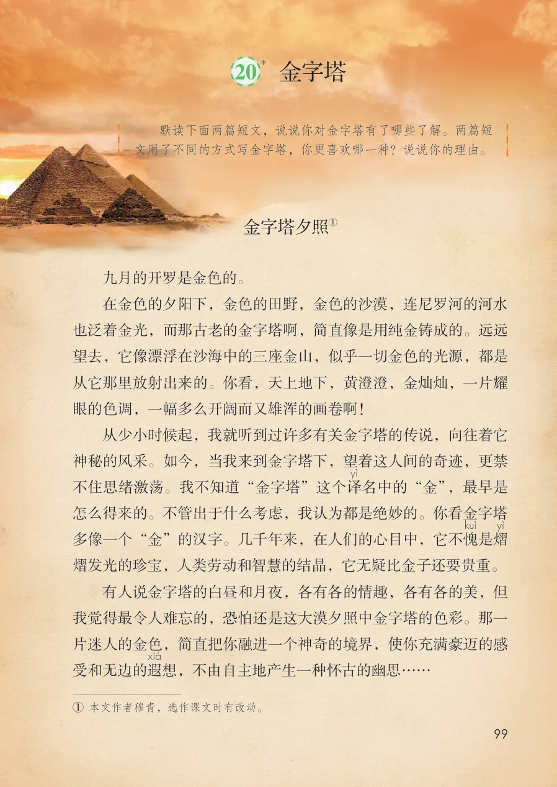
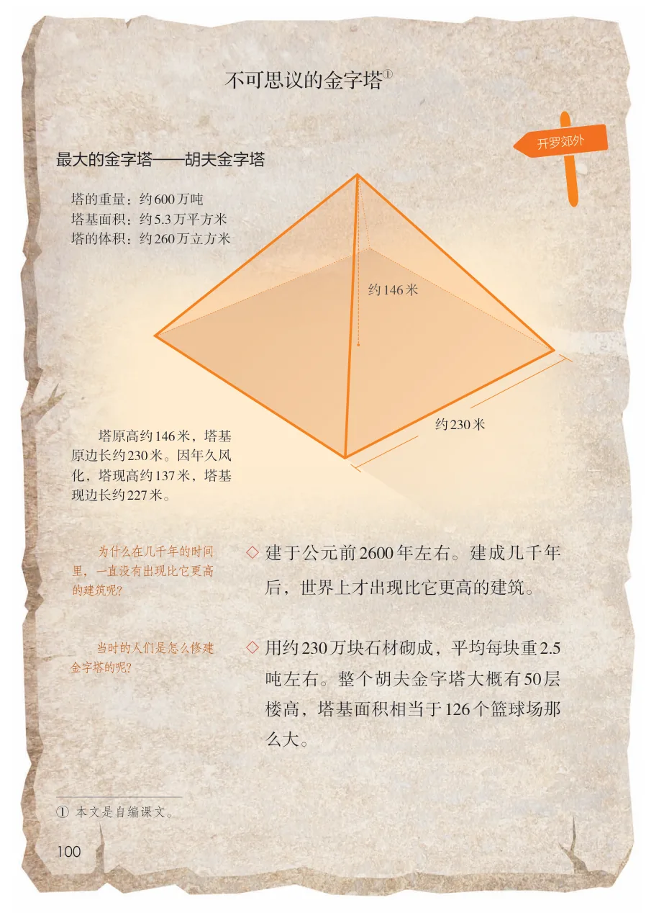
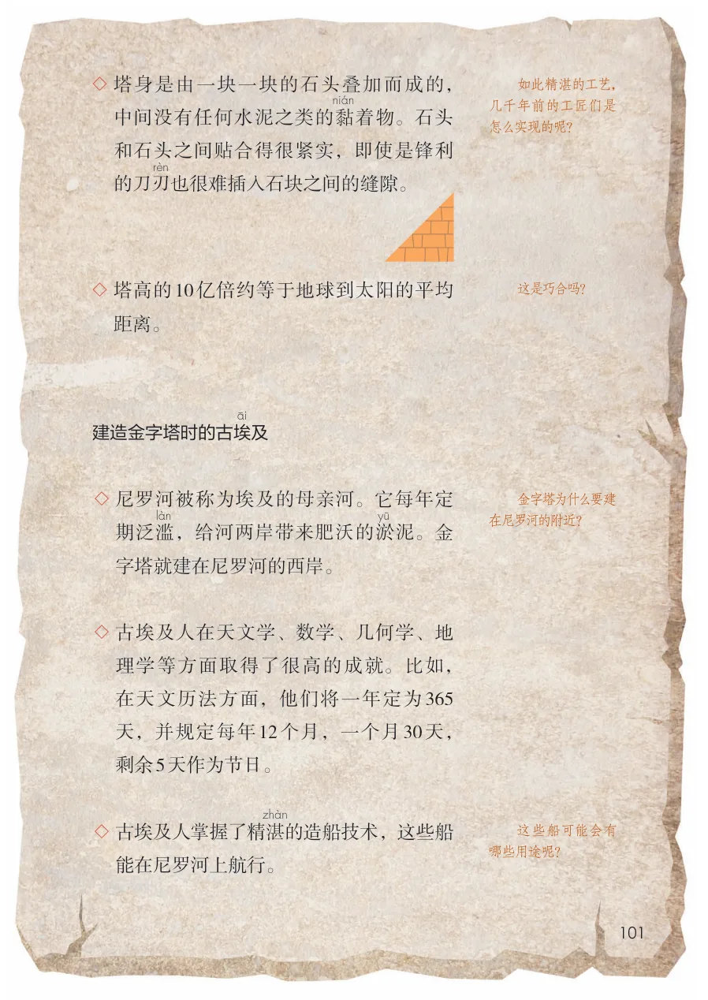
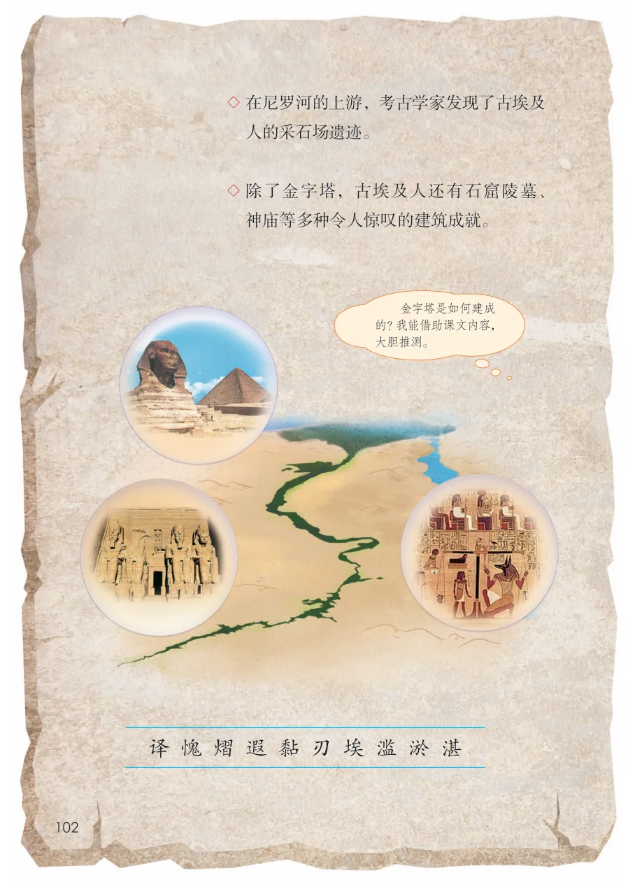

展开章节菜单
*20 金字塔
默读下面两篇短文，说说你对金字塔有了哪些了解。两篇短文用了不同的方式写金字塔，你更喜欢哪一种？说说你的理由。
金字塔夕照
九月的开罗是金色的。
在金色的夕阳下，金色的田野，金色的沙漠，连尼罗河的河水
也泛着金光，而那古老的金字塔啊，简直像是用纯金铸成的。远远
望去，它像漂浮在沙海中的三座金山，似乎一切金色的光源，都是
从它那里放射出来的。你看，天上地下，黄澄澄，金灿灿，一片耀
眼的色调，一幅多么开阔而又雄浑的画卷啊！
从少小时候起，我就听到过许多有关金字塔的传说，向往着它
神秘的风采。如今，当我来到金字塔下，望着这人间的奇迹，更禁
不住思绪激荡。我不知道“金字塔”这个译
名中的“金”，最早是
怎么得来的。不管出于什么考虑，我认为都是绝妙的。你看金字塔
多像一个“金”的汉字。几千年来，在人们的心目中，它不愧
熠发光的珍宝，人类劳动和智慧的结晶，它无疑比金子还要贵重。
有人说金字塔的白昼和月夜，各有各的情趣，各有各的美，但
我觉得最令人难忘的，恐怕还是这大漠夕照中金字塔的色彩。那一
片迷人的金色，简直把你融进一个神奇的境界，使你充满豪迈的感
想，不由自主地产生一种怀古的幽思……
查看教材原页（保留全部图片、注音与原始排版）

不可思议的金字塔
最大的金字塔—胡夫金字塔
开罗郊外
塔的重量：约600万吨塔基面积：约5.3万平方米塔的体积：约260万立方米
约146米
塔原高约146米，塔基原边长约230米。因年久风化，塔现高约137米，塔基现边长约227米。
为什么在几千年的时间里，一直没有出现比它更高的建筑呢？
后，世界上才出现比它更高的建筑。
当时的人们是怎么修建金字塔的呢？
吨左右。整个胡夫金字塔大概有50 层
楼高，塔基面积相当于126个篮球场那
么大。
查看教材原页（保留全部图片、注音与原始排版）

如此精湛的工艺，几千年前的工匠们是怎么实现的呢？
中间没有任何水泥之类的黏
着物。石头
和石头之间贴合得很紧实，即使是锋利
的刀刃
也很难插入石块之间的缝隙。
这是巧合吗？
距离。
金字塔为什么要建在尼罗河的附近？
，给河两岸带来肥沃的淤
泥。金
字塔就建在尼罗河的西岸。
理学等方面取得了很高的成就。比如，
在天文历法方面，他们将一年定为365
天，并规定每年12 个月，一个月30 天，
剩余5天作为节日。
的造船技术，这些船
这些船可能会有哪些用途呢？
能在尼罗河上航行。
查看教材原页（保留全部图片、注音与原始排版）

◇ 除了金字塔，古埃及人还有石窟陵墓、
人的采石场遗迹。
神庙等多种令人惊叹的建筑成就。
金字塔是如何建成的？我能借助课文内容，大胆推测。
查看教材原页（保留全部图片、注音与原始排版）
